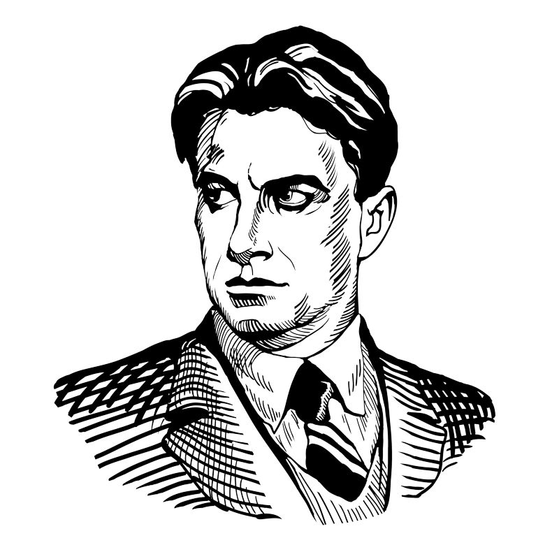

САНКТ-ПЕТЕРБУРГ ОТМЕЧАЕТ
130 — ЛЕТИЕ МАЯКОВСКОГО! 

Интерактивная карта "По следам Маяковского"
Источники:
Роль: аналитик, педант, реализатор
Программист
Роль: душа компании, генератор идей, шейпер
Сценарист и оператор
Роль: реализатор, душа компании, педант
Сценарист и оператор
Роль: исследователь ресурсов, генератор идей, аналитик
Сценарист, оператор и монтажёр
Роль: генератор идей, душа компании, педант
Собиратель информации
Роль: координатор, душа компании, реализатор
Сценарист и оператор
Что-то пошло не так и не работает?
Воспользуйтесь альтерантивным доступом.